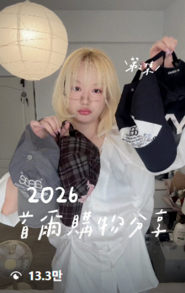
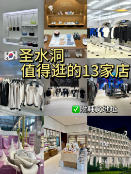
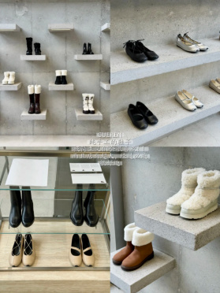
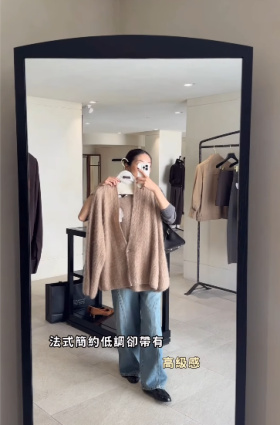
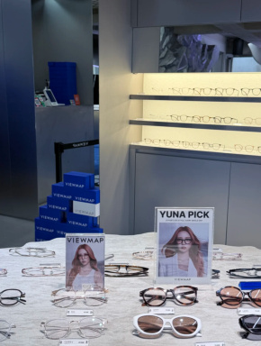
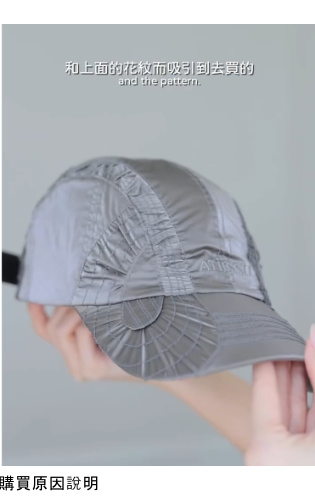
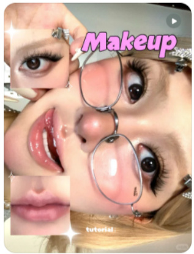
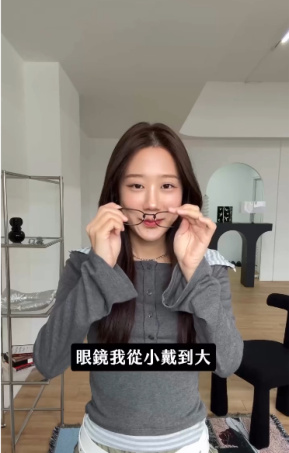

影片筆記
合作福利眼鏡 × 1 ＋ 墨鏡 × 1合計不超過 ₩130,000
- 影片長度 40 秒以上
- 封面、開頭預告及影片開始後 30 秒內露出品牌及商品
- 須包含字幕及口播
本指南為VIEWMAP官方合作拍攝指南，適用於品牌合作、門市體驗及 Influencer 宣傳內容製作。
影片筆記 / 圖文筆記（二選一）
請選擇對應的拍攝形式，其餘章節為兩種形式通用。
品牌名稱： VIEWMAP（뷰맵）
品牌理念： High-End for All
產品類別： 光學眼鏡／墨鏡
門市名稱： VIEWMAP TITAN SEONGSU（뷰맵 타이탄 성수）
門市地址： 서울특별시 성동구 성수일로 42 / 首爾特別市城東區聖水一路 42號
交通方式： 地鐵 2 號線纛島站（뚝섬역）5 號出口
以下為 VIEWMAP 品牌核心商品優勢，適用於所有合作門市及內容創作方向。無論採用影片或圖
文形式，皆須於合作內容中清楚傳達以下資訊。
VIEWMAP 門市販售的所有金屬鏡框產品，從鏡框前端（Front）至鏡腳（Temple）皆採用鈦金屬材
質，兼具輕盈、耐用及舒適配戴等特色。拍攝時建議搭配鏡框、鏡腳及商品細節特寫，讓觀眾更直
觀地了解商品材質與設計特色。
VIEWMAP 提供 40,000～60,000 韓元價位的鈦金屬眼鏡，在兼顧設計、材質及品質的同時，亦
具備價格競爭力，讓消費者能以親民的價格選購鈦金屬眼鏡。
影片筆記：須透過口播或字幕傳達上述兩項品牌核心資訊
圖文筆記：須於貼文內文中清楚說明，並建議搭配商品細節圖片
創作者可依照自身風格及內容情境調整表達方式，但不得省略上述核心宣傳資訊
依照實際合作門市及活動期間，選擇對應的宣傳主題。
以品牌形象、門市空間及眼鏡試戴體驗為主要宣傳重點。內容須清楚呈現 VIEWMAP 品牌名稱、
聖水旗艦店位置、門市特色及實際試戴畫面。
建議結合聖水逛街、韓國旅遊及時尚穿搭等主題，提高門市的長期曝光度與消費者到店意願。
以一週年限定優惠、熱門眼鏡款式及門市體驗為主要宣傳重點。
VIEWMAP 聖水旗艦店一週年活動
指定商品最高 30%OFF
活動期間至 2026 年 12 月 31 日
僅限2樓商品
OPEN RUN 時段優惠
每日 10:00～13:00，符合條件的商品可享 ₩10,000 折扣
活動期間至 2026 年 12 月 31 日
僅限部分商品，2 樓商品不適用
以新門市開幕、門市空間、眼鏡試戴及周邊購物路線為主要宣傳重點。
合作內容須包含新門市名稱、位置、交通方式、門市特色及實際到店體驗。如門市設有開幕限定
優惠、贈品或抽獎活動，須依品牌方提供的資訊進行宣傳。
建議結合當地購物攻略、商圈介紹及新店探店等主題，提升新門市的曝光度與消費者到店意願。
請依照帳號定位及內容風格，從以下五種創作方向中選擇一種。
所有創作方向皆須遵守品牌核心宣傳重點及合作必守清單。
在自然的日常生活紀錄中，讓 VIEWMAP 成為主要探店亮點，透過真實的購物及試戴過程，提高
觀眾對品牌的興趣。
VIEWMAP須安排於影片第一個主要探店段落，並於影片開始後 30 秒內進入品牌介紹。
VIEWMAP 相關內容須達 40 秒以上，確保品牌及商品具有足夠的曝光時間。
建議於影片開頭 3～5 秒提前露出眼鏡商品、試戴畫面或門市亮點，吸引觀眾持續觀看。
記錄逛街、進店、挑選及試戴眼鏡等自然過程，呈現真實的門市體驗。
合作宣傳段落中不得刻意加入其他競爭眼鏡品牌的商品推薦。
必須標註的 Hashtag：
影片構成及核心宣傳重點：


小紅書
清楚呈現 VIEWMAP 的品牌特色及商品優勢，透過多元化的好物推薦內容，吸引觀眾收藏、搜尋
及購買。
影片或圖文開頭須直接呈現推薦理由、吸睛的眼鏡款式或實際配戴效果。
建議介紹 2～3 款不同風格的眼鏡，展現商品的多樣性。
結合實際試戴感受，介紹鏡框設計、配戴效果及穿搭特色。
建議加入商品細節特寫，提高觀眾對款式及材質的辨識度。
清楚標註 VIEWMAP 品牌名稱、門市位置及適用的活動資訊。
可結合韓國必買清單、時尚配件、美妝及生活選物等主題，將 VIEWMAP 眼鏡自然融入推
薦內容，增加不同關鍵字的搜尋曝光機會。
必須標註的 Hashtag：
影片/圖片構成及核心宣傳重點：



小紅書
將 VIEWMAP 打造成韓國旅遊及購物行程中值得推薦的探店地點，提升品牌搜尋曝光及實際到店
意願。
VIEWMAP 必須列入攻略中明確推薦的購物地點。
VIEWMAP 須安排於攻略第一個主要介紹的購物地點。
可搭配周邊咖啡廳、選物店、購物商圈及熱門景點，規劃完整的逛街路線。
提供門市名稱、交通方式、位置及推薦到訪的理由。
不得僅以店名或照片簡單帶過，須包含實際探店、門市環境及眼鏡試戴畫面。
貼文封面、標題或影片字幕中建議加入地區名稱及購物相關關鍵字，提高內容的搜尋與收
藏價值。
必須標註的 Hashtag：
※ 依實際合作門市加入對應的地區 Hashtag，例如 #聖水逛街。
影片/圖片構成及核心宣傳重點：








小紅書
小紅書參考內容小紅書參考內容透過真實的選購、試戴及開箱過程，提升商品吸引力與消費者購買興趣。
記錄前往 VIEWMAP 門市挑選眼鏡及試戴不同款式的過程。
拍攝最終選擇的眼鏡款式，清楚呈現鏡框設計及商品細節。
展示實際取得的商品包裝、配件及開箱過程。
分享選擇該款眼鏡的原因、實際配戴效果及個人使用感受。
建議於影片開頭使用開箱畫面、商品特寫或配戴效果作為吸睛片段。
可結合日常穿搭或生活情境，呈現眼鏡在實際生活中的搭配方式。
必須標註的 Hashtag：
影片/圖片構成及核心宣傳重點：




介紹 VIEWMAP
小紅書
以眼鏡作為整體造型的視覺重點，強化 VIEWMAP 的時尚品牌形象及商品搭配價值。
以眼鏡作為穿搭或妝容的主要搭配元素，呈現商品的時尚性。
可結合 OOTD、What's in My Bag、眼鏡妝容教學及日常穿搭等主題。
建議呈現同一副眼鏡搭配不同造型，或透過不同鏡框展現風格差異。
必須包含清晰的正面配戴畫面，讓觀眾能辨識眼鏡款式及實際配戴效果。
可加入門市試戴、挑選或商品開箱片段，建立內容與 VIEWMAP 品牌的連結。
鼓勵創作者依照自身風格進行穿搭，在完整傳達品牌核心資訊的前提下，避免過度制式化
的商品介紹。
必須標註的 Hashtag：
※ 依照實際內容主題加入 #ootd、#眼鏡妝容 或 #翻包記。
影片/圖片構成及核心宣傳重點：



小紅書


合作影片、圖片及貼文文案須於正式發布前提供品牌方進行審核，經確認後方可發布。
如有修改需求，須完成相關修改並再次取得品牌方確認。
文案須清楚標註 VIEWMAP 品牌名稱、門市位置及適用的宣傳活動資訊。
發布時須依照所選擇的內容創作方向，加入 VIEWMAP 指定的Hashtag。
詳細文案撰寫指南及指定宣傳資訊將於合作確認後另行提供。
原則上須於門市體驗後 7～14 日內完成內容發布。
如因內容製作、個人行程或其他特殊情況需延後發布，請務必提前告知並協調發布日期。
不接受預約當日無故未到或臨時取消。
如需更改預約日期或時間，請至少提前 1 日提出。
合作貼文發布後，請勿關閉按讚及留言功能。
如留言區出現詢問門市地址、商品款式或商品型號等問題，請配合提供正確資訊。如有不
確定之處，可向我們確認。
合作貼文自正式發布日起須至少保留 1 年，未經雙方協議不得任意刪除或隱藏。
Instagram 合作貼文或 Reels 須依事先約定，邀請 VIEWMAP官方帳號為共同協作者。
如因平台規範、內容審核或不可抗力因素，導致合作內容無法正常曝光或收錄，請配合品
牌方協調修改或補發內容。